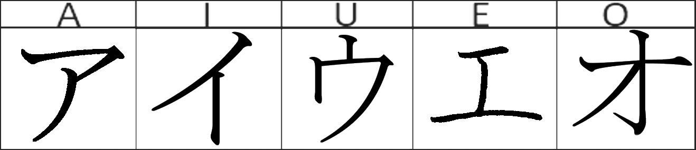

About the lesson
These lesson are here to help you remember all the katakana you have learnt in your study. Later in the lesson we will offer writing exercise to help you remember the stroke order of all the kana.
The app teaching style
We are using the same style we talked about in Revision 1: Hiragana. In case you missed it we will be using a progressive system of teaching the kana. As you learn new kana, we will immediately replcase the roman letter(Romaji) with the kanna you just learnt. For example, after you've learned あ we will mix it inot the example word:
| English |
Before the lesson |
After the lesson |
Complete kana |
| You |
anata |
あnata |
あなた |
| Dog |
Inu |
いnu |
いぬ |
New Katakana 新し片仮名
The first five katakana to learn are listed below. Notice the different stroke types. Make sure you learn the correct stroke order and stroke type

Writing basics
A stroke being when the pen(or any other writing device) meets the paper. The stroke ends when the pen separates from the paper.
Traditionally, Japanese was written with brushes. Almost every Jpanese learning material uses the brush wirtten style for Jpanese characters. The brush style us the best representaion on how the chracter should be written
- The different type of brush strokes.
There are thress types of strokes. For each of understanding we have named them fade out, dead stop and bounce fade. Whether writing with a brush, pen or pencil, make sure that you pay attention to the stroke type. This will ensure that your writing is neat and proper.
Back
Practice
Next